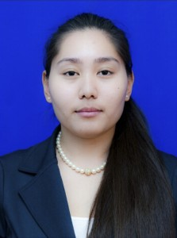
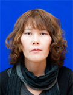
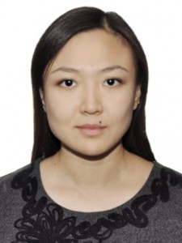
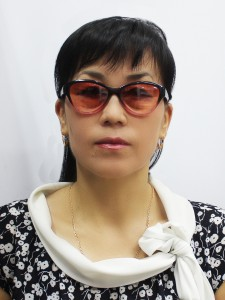
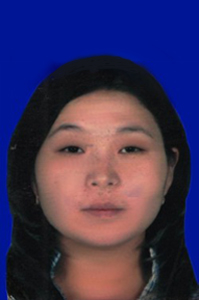
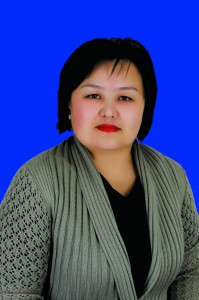
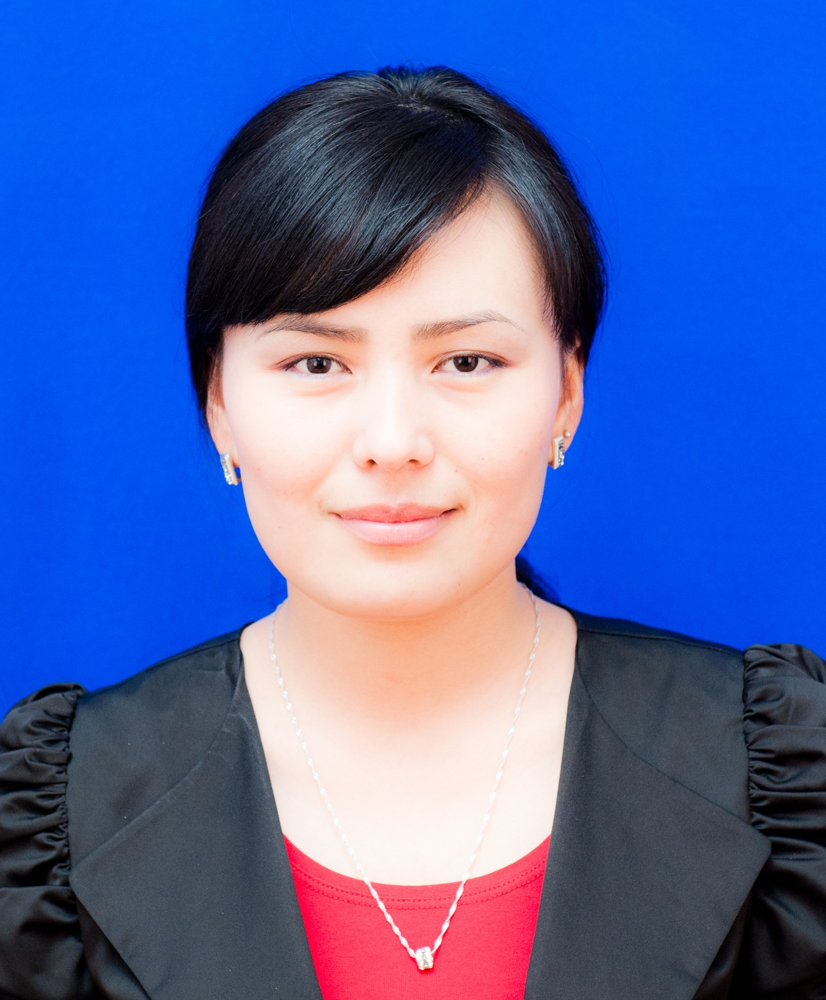
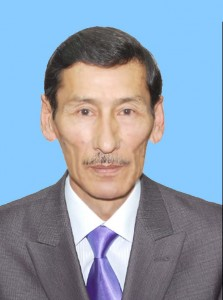

?????

Факультет инновационных технологии
Ученая степень:
Ученое звание: Магистр
Должность: старший преподаватель
Биография
Тау Ардақ Ғалымжанқызы, 1987 года рождения, замужем, образование – высшее, окончила КарГТУ
в 2010 году по специальности «Вычислительная техника и программное обеспечение» с отличием,
магистр технических наук по специальности «Вычислительная техника и программное обеспечение».
Тау А.Ғ. работает в КарГТУ с 2010 года. В 2013 году окончила магистратуру по специальности «Вычислительная
техника и программное обеспечение»,по научно-педагогическому направлению.
С 2010 по 2014 год работала в КарГТУ заведующим лабораторией на кафедре «Вычислительная техника и программное обеспечение».
С 2014 года работает в КарГТУ ассистентом на кафедре «Информационно- вычислительные системы».

Факультет инновационных технологий
Ученая степень: Нет
Ученое звание: Магистр
Должность: Старший преподаватель
Биография
Абилдаева Гулнур Балтабаевна, старший преподаватель кафедры ИВС.В 2001 году с отличием окончила
Карагандинский государственный технический университетпо специальности «Автоматизированные системы
обработки информации и управления».Рабочий стаж около 15 лет. Автор более 50 научных и учебно-методических
трудов, в том числе 5 учебных пособий и 3 свидетельство о государственной регистрации на
объект авторского права.Имеет публикации в сборниках и научных журналах.

Факультет инженерной экономики и менеджмента
Должность: Преподаватель кафедры АНК и СГД
Биография
В 2012 году поступила на бакалавриат дневного отделение юридического факультета Карагандинского государственного
университета имени академика Е. А. Букетова по специальности юриспруденция, которую окончила в 2016 году.
В период с 2.04.2014 по 5.05.2014 года прошла тренинги по программе «Практические аспекты работы начинающего юриста»
в ТОО Юридическая компания«MOVING», г. Караганда.2016 – 2018 г.г. обучалась в магистратуре научно-педагогического
направления Карагандинского государственного университета имени академика Е. А. Букетова, по специальности юриспруденция.

Info
Образование высшее: 1. Нежинский Государственный педагогический институт им. Н.В.Гоголя , филологический
факультет, специальность – учитель русского языка и литературы, 1988г., Республика Украина.
2. Семипалатинский университет им. М. Ауэзовафакультет физвоспитания, специльность – учитель
физвоспитания и тренер, 2005 г.

Факультет инновационных технологии
Ученая степень: нет
Ученое звание: магистр
Должность: преподаватель
Сагатбекова Динара Ермековна, преподаватель.В 2017 году успешно защитила магистерскую
диссертацию по специальности «Вычислительная техника и программное обеспечение».
Работает на кафедре с 2012 года.

Info
Преподаватель кафедры «Профессионального образования и педагогики», магистр профессионального
обучения.Окончила Карагандинский государственный университет имени Е.А.Букетова в 2002 г. защищена
магистерская диссертация в 2007 году.Сведения о текущей учебной деятельности (список читаемых дисциплин)
– психология и развитие человека, дуальное обучение.Сведения о научной деятельности: количество статей
международного, республиканского, зарубежного и регионального статуса – 6, учебно-методических комплексов – 2,
учебно – методические рекомендации – 1.Официальная контактная информация – Б.-Мира, 56, корпус № 1, тел. раб. 56-52-33.

Факультет инновационных технологии
Ученая степень:
Ученое звание: магистр
Должность: старший преподаватель
Биография
Образование: высшее, Карагандинский Государственный Технический Университет (2003-2008гг), специальность:
информационно-измерительная техника и технологиии, квалификация: инженер; магистр по специальности
«Информационные системы» (2013-2015 гг.). Время работы в данном вузе – 10 лет.Академический опыт
Карагандинский Государственный технический университет. Преподаваемые дисциплины «Информационно-коммуникационые технологии»,
«Основы информационных систем», «Проектирование ПО».

Факультет инженерной экономики и менеджмента
Ученая степень Кандидат философских наук
Ученое звание Доцент
Должность Доцент кафедры АНК и СГД
Биография
Казбеков Нурлан Абдилович 1953 г.р. Выпускник Ленинградской Высшей профсоюзной школы культуры ВЦСПС. 1991-94 гг. аспирант
очного отделения Института философии и права АН РК. Кандидат философских наук (candidates(Ph.D.), специальность: 09.00.11 –
социальная философия. С 2005 года доцент политологии (ВАК РК). В 2012 году присвоено ученое звание профессор КУ «Болашак».
Трудовой стаж в вузе – 26 лет. Автор 45 научных и научно-методических трудов. Пять учебных пособий внедрены в учебный
процесс КарГУ им.Е.А.Букетова ( Акт о внедрении от 30.09.11); семь учебных пособий внедрены в учебный процесс КУ «Болашак»
в качестве учебно-методической базы и теоретической основы для дисциплин по специальности «Политология» (Акт о внедрении от 15.05.13).
С 01.09.2013 года доцент кафедры СГД КарГТУ.
?????